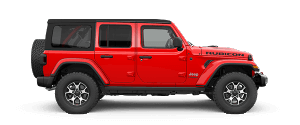
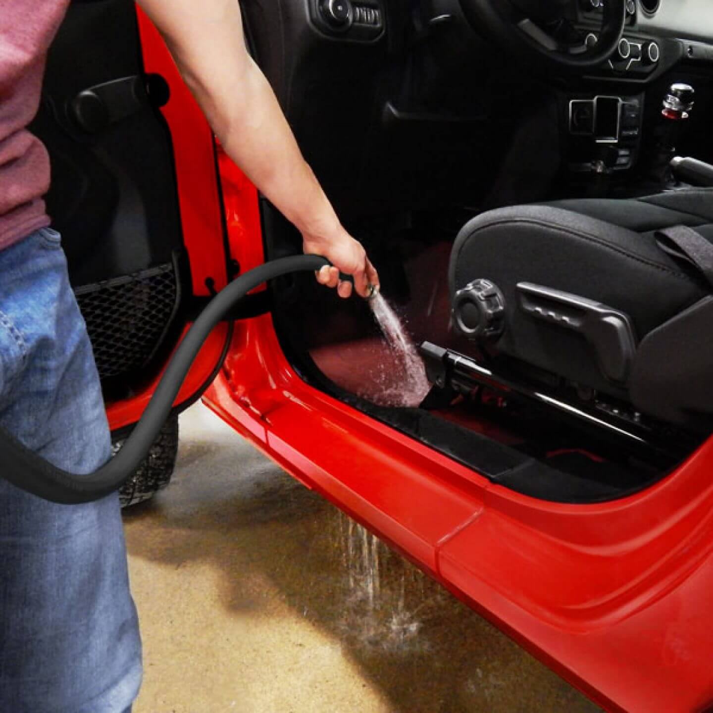
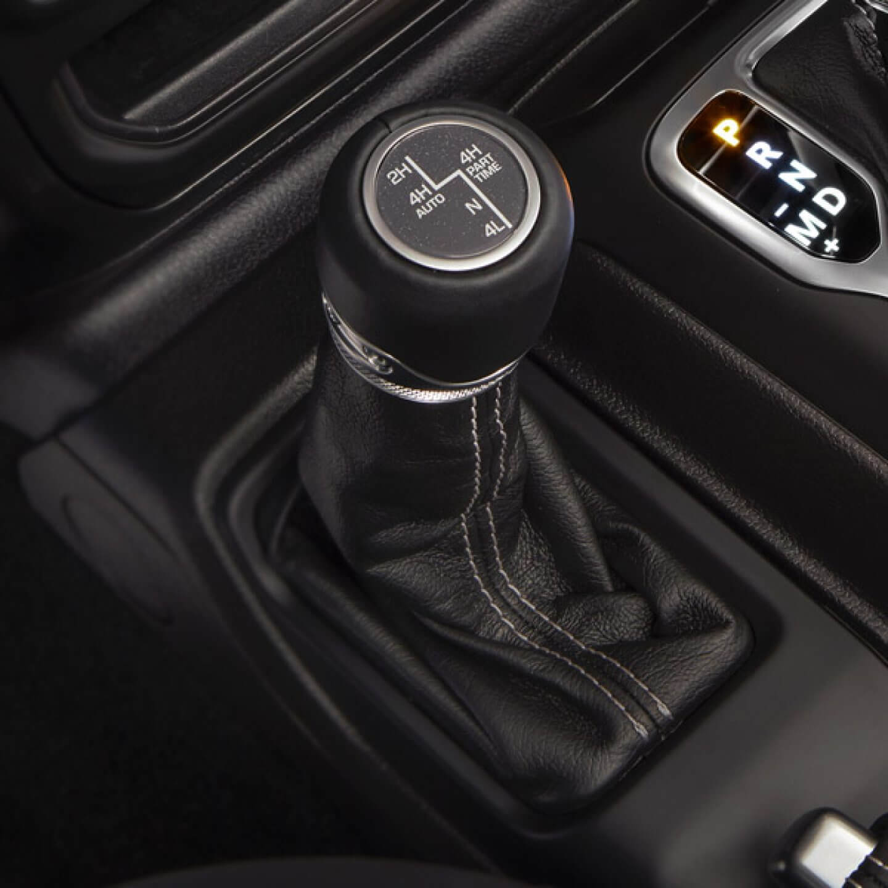

wrangler
sport
All New Wrangler Sport는 거침 없는 모험을 원하는 사람들을 위해 탄생했습니다. Traill Rated® 인증을 받은 차량으로 아무리 험난한 지형에서도 탁월한 주행을 선보이며 보다 특별한 나만의 개성을 추구하는 사람들을 위한 최고의 선택입니다.

wrangler
rubicon
All New Wrangler Rubicon은 편리한 스튀치 작동으로 오프로드에 최적화된 4륜 구동을 구현하고 한계를 뛰어넘는 경험을 제공합니다.

wrangler
sahara
All New Wrangler Sahara고급스러운 소재와 정교함으로 최고의 주행 경험을 선사합니다. Wrangler 특유의 최첨단 장치와 혁신적인 수납공간, 탁월한 안락함이 돋보이는 세련된 실내 공간을 자랑하며, 바디컬러 펜더 플레어와 바디컬러 하드탑이 랭글러만의 독창적인 외관을 완성합니다.
SPORT

RUBICON
SAHARA


-

ParkView® Rear Back Up Camera
ParkView® 후방 카메라는 차량 후진 시에 Uconnect® 터치스크린을 통해 후방 주변을 보여줍니다.
-

Wash-Out Interior
내부 청소 및 배수시설을 위해 마련된 단방향 배수 밸브를 열면 고여있는 물과 흙을 제거할 수 있습니다.
-

Black Sunrlder® Soft Top
블랙 선라이더 소프트탑은 바람소리를 줄이고, 보다 효과적으로 물에 젖은 것을 관리하며, 보다 쉽게 접었다 폈다 하기 위해 재설계 되었습니다.
-

Unconnect With 7-Inch Touchscreen
7인치 Uconnect® 터치스크린은 Apple CarPlay, Android Auto와 연결되어 차량이 이동 중일 때도 편리하고 빠르게 관련된 기능을 이용할 수 있습니다.
-

Tru-Lok® Locking Differentials
Tru-Lok® 전후방 전자식 디퍼렌셜 잠금장치는 동력을 각 휠에 균등하게 전달하여, 저속 바위 구간 주행 시 탁월한 접지력을 구현합니다.
-

Rock-Trac® 4x4 System
Rock-Trac® 4x4 System은 보다 많은 제어력과 토크로 보다 우수한 오프로드 성능을 제공합니다.
-

Available Uconnect® With 8.4-Inch Touchscreen
차세대 Uconnect® 시스템은 8.4인치 터치스크린을 탑재하고 있어 필요한 정보를 손쉽게 확인할 수 있습니다. 내비게이션과 차량 제어, Apple CarPlay® 혹은 Android Auto™를 지원함으로써 운전 시에 스마트폰 기능을 사용하면서도 주의가 분산되지 않도록 도와줍니다.
-

18-Inch Polished Aluminum Wheels
테크 그레이 포켓이 가미된 18인치 광택 알루미늄 휠이 대담한 디자인을 완성합니다.
-

Available Selec-Trac® 4x4 System
새롭게 선보이는 Selec-Trac® 4x4 System은 온로드와 오프로드 주행 및 기상조건에 따라 최상의 접지력을 구현할 수 있도록 자동으로 4륜구동을 작동시키는 풀타임 모드를 탑재하고 있습니다.
-

Body-Color Fender Flares and Side Steps
바디컬러 펜더 플레어는 바디컬러 그릴과 외관 페인트와 완벽한 조화를 이루며 고급스러운 디자인을 완성합니다. 기본 사양인 사이드 스텝으로 보다 편안한 승하차가 가능합니다.
-

Available Uconnect® With 8.4-Inch Touchscreen
차세대 Uconnect® 시스템은 8.4인치 터치스크린을 탑재하고 있어 필요한 정보를 손쉽게 확인할 수 있습니다. 내비게이션과 차량 제어, Apple CarPlay® 혹은 Android Auto™를 지원함으로써 운전 시에 스마트폰 기능을 사용하면서도 주의가 분산되지 않도록 도와줍니다.